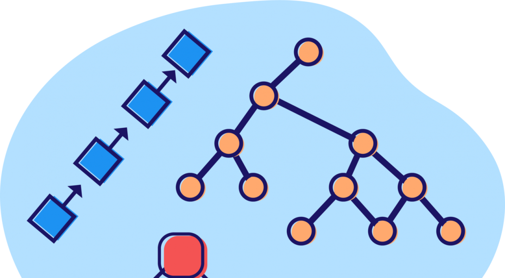

A data structure is a particular way of organizing data in a computer so that it can be used effectively. For example, we can store a list of items having the same data-type using the array data structure.
Data Structure is a way to store and organize data so that it can be used efficiently. Our Data Structure project includes some topics of Data Structure such as Array, Pointer, Structure.
The data structure name indicates itself that organizing the data in memory. There are many ways of organizing the data in the memory as we have already seen one of the data structures, i.e., array in C language. Array is a collection of memory elements in which data is stored sequentially, i.e., one after another. In other words, we can say that array stores the elements in a continuous manner. This organization of data is done with the help of an array of data structures. There are also other ways to organize the data in memory. Let's see the different types of data structures. The data structure is not any programming language like C, C++, java, etc. It is a set of algorithms that we can use in any programming language to structure the data in the memory. To structure the data in memory, 'n' number of algorithms were proposed, and all these algorithms are known as Abstract data types. These abstract data types are the set of ru
The primitive data structures are primitive data types. The int, char, float, double, and pointer are the primitive data structures that can hold a single value.